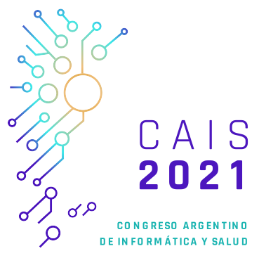

|  |
Call for Papers
|
Introducción
El 12º Congreso Argentino de Informática y Salud se desarrolla en el marco de las 50º Jornadas Argentinas de Informática (50 JAIIO) con el objetivo de reunir a los profesionales expertos y a todos aquellos que estén interesados en la aplicación de herramientas tecnológicas en el campo de la salud para mejorar la gestión, los procesos asistenciales, la calidad de la atención y por sobre todas las cosas para generar un impacto positivo en el cuidado de las personas. El evento está organizado por la Asociación Argentina de Informática Médica (AAIM), Sociedad Argentina de Informática (SADIO) y la Asociación HL7 Argentina.
Tópicos a cubrir por el congreso
Convocamos a la presentación de trabajos científicos enmarcados en dominios del conocimiento de la Informática en Salud:
- Sistemas de Información en Salud
- Salud y Gestión Clínica
- Registros Médicos Electrónicos - Historia Clínica Electrónica
- Soporte a la toma de decisiones (CDSS) aplicados a la salud
- Representación y gestión del conocimiento en salud
- Educación en Informática en Salud
- Informática centrada en el paciente y portales personales
- Bioinformática
- Estándares e Interoperabilidad
- Regulaciones aplicados a la informática en salud
- Informática en Enfermería
- Telemedicina
- Tecnología móvil aplicada a la Salud
- Ontologías aplicadas a la Salud
- Inteligencia artificial aplicada a la Salud
- Minería de datos y tableros de control aplicados a la salud
- Modelado y optimización de procesos clínicos y sanitarios
- Seguridad, privacidad y confidencialidad de la información en salud
- Ciencia de Datos en Salud
- Realidad aumentada aplicada a la salud
- Usabilidad de los Sistemas de información de salud
- IOT aplicado a salud digital
Categorías de trabajos y formatos solicitados
Los trabajos deberán cumplir con el formato LNCS (Lecture Notes in Computer Science) utilizando la plantilla descargable. Los trabajos deberán incluir un “Abstract” de hasta 200 palabras en la sección correspondiente de la plantilla. El formato especificado por el documento es de uso obligatorio. Los idiomas aceptados son español, portugués e inglés.
Las plantillas se pueden descargar desde este link en el sitio web de las jornadas: https://50jaiio.sadio.org.ar/simposios/formatos
Los trabajos serán revisados por al menos 2 (dos) miembros del comité del simposio según el protocolo propuesto por las autoridades de las JAIIO. Los plazos se explicitan con las “Fechas Importantes” en este mismo documento.
El envío del trabajo definitivo (camera ready) debe incluir nombre y apellido, filiación institucional, dirección de la institución, financiamiento (de haberlo tenido), dirección de correo electrónico de los autores y referencias bibliográficas. Deben incluir además de tres (tres) a cinco (5) palabras clave y el resumen (abstract) ya mencionado. El formato del archivo del envío debe ser PDF.
Los mejores papers serán invitados para su publicación en la Revista Electrónica de SADIO
Instrucciones para el envío de trabajos
Es requisito que al menos uno de los autores de cada trabajo aceptado se encuentre registrado en la JAIIO antes de la fecha límite para el envío de la versión final ("camera ready", 27 de agosto de 2021). Además, es requisito presentarse al simposio en la fecha y horario indicados para la exposición del trabajo. Tenga en cuenta que el trabajo cuyo autor no asista a exponerlo será retirado de los proceedings. En caso de fuerza mayor el autor podrá enviar a un representante (debidamente autorizado) para que lo exponga en su nombre.
El envío de trabajos al CAIS o a cualquiera de los simposios de las 50º JAIIO se hace por medio del Sistema de Gestión de Trabajos de SADIO.
Para enviar su trabajo necesita estar registrado (o registrarse) y acceder al sistema. Para resolver cualquier duda, tiene a su disposición las instrucciones para obtención de credenciales y acceso al sistema de envío de trabajos en la página http://cais.org.ar/?q=node/71. Para acceder directamente al Sistema de Gestión de Trabajos dirigirse a http://sgc.sadio.org.ar
Tipos de presentaciones
- Full Paper
Se trata de un trabajo tradicional con aportes originales y/o innovadores, con una extensión máxima recomendada de 14 páginas. Proceso de revisión usual del simposio, siguiendo las políticas tradicionales del mismo. Los trabajos aceptados serán expuestos oralmente y discutidos en el simposio, y el manuscrito completo se incluirá en los Proceedings de las JAIIO.
Estructura del Full Paper:
Título. Debe ser representativo del contenido, en lo posible no mayor de 10 palabras. Utilizar las mayúsculas sólo para nombres propios y para inicio de oración. Si es necesario, puede agregarse un subtítulo de longitud similar.
Nombre y apellido, filiación institucional, ciudad, país, y dirección de correo electrónico de cada autor.
Resumen de hasta 200 palabras.
Incluir no menos de tres y no más de cinco palabras clave en el idioma del texto.
Introducción
Cuerpo del trabajo
Conclusiones
Anexos (si corresponde)
Bibliografía (No agregar a la bibliografía textos que no se hayan citado o mencionado en el trabajo)
- Demostración (Demo)
Trabajo que involucra aplicativo o software. Los trabajos tipo Demo que sean admitidos para su presentación en el Congreso podrán participar en una sesión de demostración en el CAIS. El comité del simposio revisará la pertinencia en cada caso y lo comunicará a los autores para coordinar las actividades durante el evento. El envío debe incluir:
- un resumen extendido de no más de 2 páginas que informe acerca de una aplicación o proceso que incluya: una descripción sintética y sus objetivos, problemas que resuelve, audiencia de usuarios a los que está destinada, y tecnología utilizada y
- una URL de una versión de la demo si corresponde, si ésta se puede ejecutar en línea o, alternativamente una dirección URL con un video que muestre las principales características de la misma.
Estructura de Demo:
Título. Debe ser representativo del contenido, en lo posible no mayor de 10 palabras. Utilizar las mayúsculas sólo para nombres propios y para inicio de oración. Si es necesario, puede agregarse un subtítulo de longitud similar.
Nombre y apellido, filiación institucional, ciudad, país, y dirección de correo electrónico de cada autor.
Resumen extendido de hasta 2 páginas (puede incluir una figura)
Incluir no menos de tres y no más de cinco palabras clave en el idioma del texto.
Bibliografía (Si la hay; no agregar a la bibliografía textos que no se hayan citado o mencionado en el trabajo)
Chairs
|
María Quispe Uznayo |
Swiss Medical Group |
|
Damián Borbolla |
Universidad de Utah |
Comité de Programa
|
Expertos |
Institución |
País |
|
Manuel Rodriguez Área: Ciencia de Datos en Salud |
Ministerio de Salud de la Ciudad de Buenos Aires |
Argentina |
|
Alfredo Almerares Área: Seguridad Clínica e industria |
InterSystems |
Chile |
|
Analia Baum Área: Proyectos de Gobiernos |
CABA |
Argentina |
|
Victoria Giussi Area: Formacion en Informatica |
CABA |
Argentina |
|
Pedro Escobar Área: Bioingeniería. Equipamiento asistencial |
Universidad Nacional del Centro |
Argentina |
|
Giselle Ricur Área: Telemedicina |
Universidad Nacional de Cuyo |
Argentina |
|
Walter Koza Área: PLN (Procesamiento del Lenguaje Natural) |
Pontificia Universidad Católica de Valparaiso |
Chile |
|
Leonardo Rojas Área: Informática en Salud Pública |
Instituto Nacional de Salud y Universidad San Marcos |
Perú |
|
Cecilia Santos Popper Área: Informática en Enfermería |
IncluIT SA | Argentina |
|
Daniel Capurro Area: Investigacion en Informatica en Salud |
Universidad de Melbourne |
Australia |
|
Lina Sofia Palacio Mejia Area: Visualización de Datos |
Conacyt - Instituto Nacional de Salud Pública |
México |
|
Diego Kaminker Área: Interoperabilidad |
Kern-IT | Argentina |
|
Ivan Kuschevatzky |
Consultor Independiente |
Argentina |
|
Marina Ridao Battaglino Área: Innovación en Salud Pública y en Informática en Salud |
Laboratorio de Innovación - UBA | Argentina |
|
Marina Rojo Área: Innovación en Salud Pública y en Informática en Salud |
Laboratorio de Innovación - UBA | Argentina |
Comité Organizador
|
Martín M. Díaz Maffini |
Hospital Alemán de Buenos Aires |
|
Alejandro Viegas Palermo |
Armada Argentina |
|
Javier Díaz |
Instituto Nacional de Servicios Sociales para Jubilados y Pensionados (INSSJP) |
|
Cintia Speranza |
Ministerio de Salud de la Nación |
|
Nicolás Passadore |
Grupo CEMICO |
|
Federico Pedernera |
Superintendencia Seguro Social |
|
Fernanda Aguirre Ojea |
Hospital Alemán de Buenos Aires |
Fechas importantes
Cierre de la recepción de trabajos: 28 de mayo de 2021 11 de Junio de 2021 NUEVA FECHA 22 de JUNIO de 2021
Notificación de trabajos aceptados: 6 de agosto de 2021
Presentación definitiva de trabajos (camera ready): 20 de agosto de 2021
Contacto:
www.cais.org.ar
info@cais.org.ar